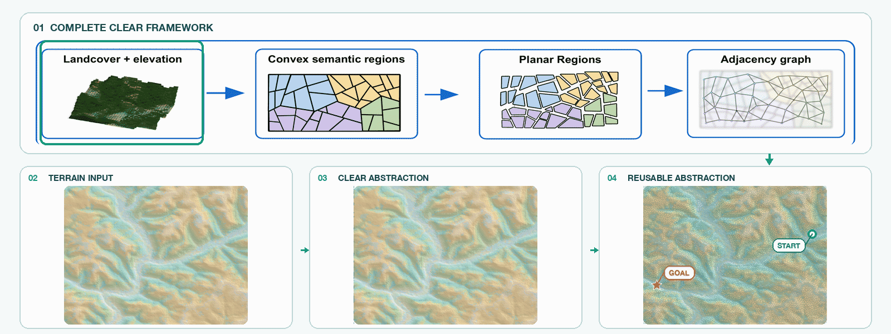

CLEAR: Large-Scale Off-Road Planning with Terrain Abstractions
Video Presentation
CLEAR supplementary video showing the terrain abstraction and planning pipeline.
CLEAR is a semantic-geometric terrain abstraction framework for large-scale off-road planning. It converts dense terrain maps into reusable, semantically aligned regions so planners can scale from local scenes to map-wide missions with reliable behavior.
